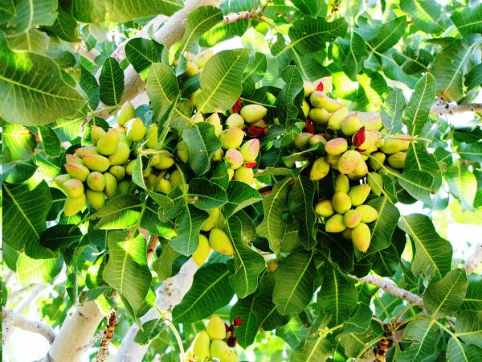

피스타치오(pistachio)
무환자나무목 옻나무과 피스타치아속에 딸린 Pistacia vera종 나무에서 채취하는 견과류.서아시아, 특히 터키 남동부 원산이다. 원래는 페르시아어로 '피스타(pistah. 나무를 의미하는 단어라고 한다.)'라고 불렸지만, 이게 고대 로마로 전해지면서 피스타치오라고 불리게 된다. 고대로마에서도 상당히 비싼 취급을 받았고, 원산지와 로마의 영향으로 성경에 등장하는 몇 안 되는 견과류중 하나이다.
주로 딱딱한 껍질을 까서 열매를 먹는다. 아이스크림의 원료로 많이 쓰이며 과자의 토핑으로도 많이 쓴다. 피스타치오 아이스크림은 연녹색에 향긋한 향으로 유명하다. 압착하여 피스타치오 오일을 얻기도 한다.

(피스타치오 이미지)
(피스타치오 이미지)
피스타치오의 효능
1. 당뇨완화2. 심장병 방지
3. 체중 조절
4. 섬유질 포함
5. 눈, 뼈, 치아 건강 촉진